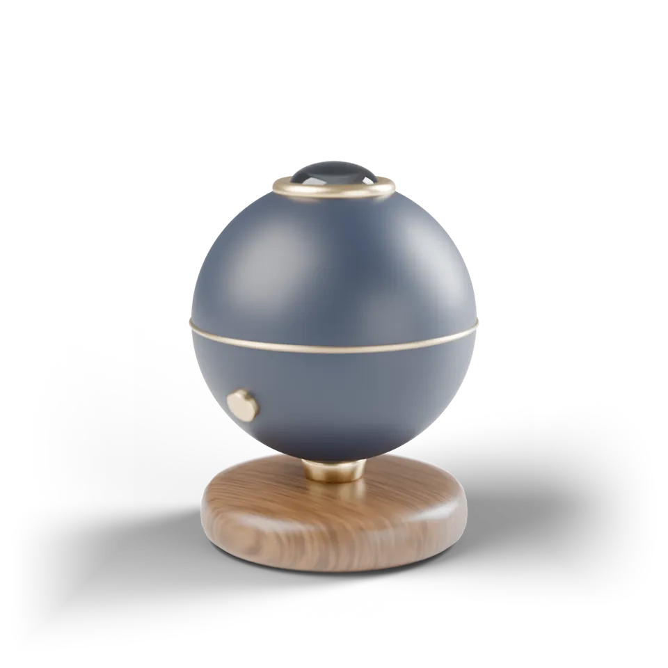
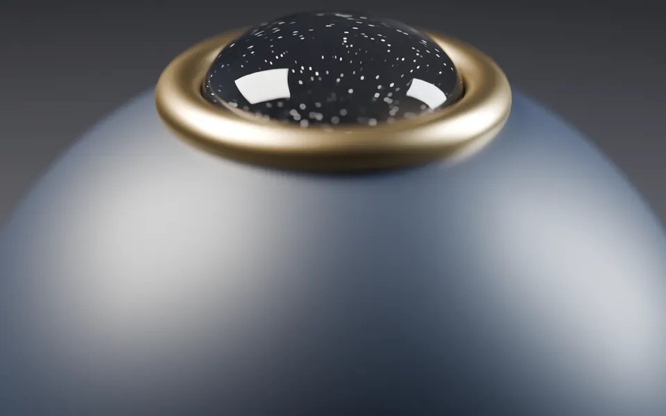
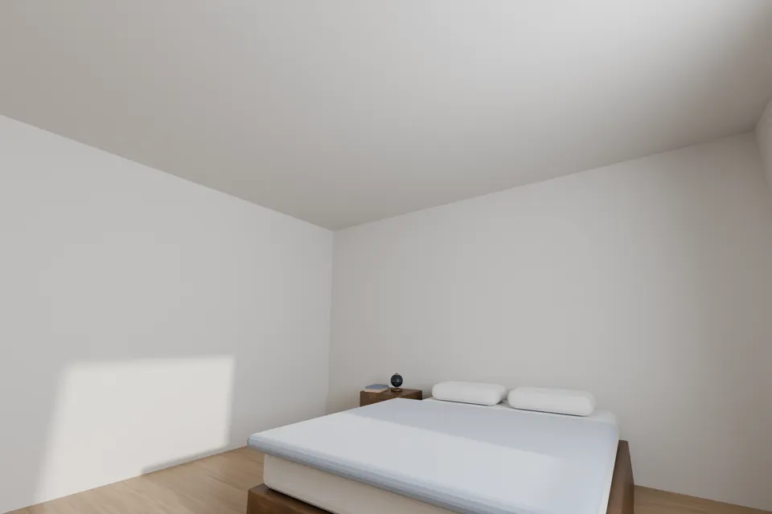
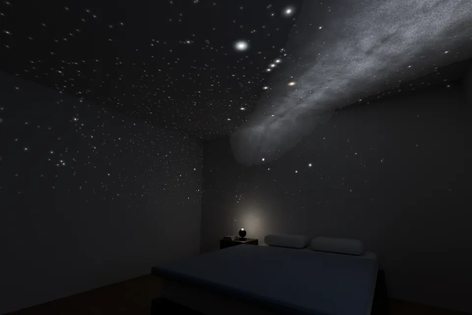
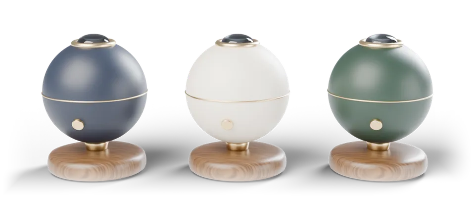

家庭用の星空投影機 HOSHIMADO 01
天井に、
今夜の本当の
星空を。
肉眼で見えるすべての星、約9,100個を、
日付と時刻のとおりに映します。
税込・送料無料。届いてから30日は返品できます。

- 9,100個映す星の数※1
- 4m映る星空の直径※2
- 22dB動いている時の音※3
星は、もう
見えない場所にある。
- 01
街の明かりで、見える星は数十個。
都市の夜空では、肉眼で見える星の多くが空の明るさに埋もれます。※4
- 02
子どもに星座を教えたくても、空が明るい。
オリオン座の三つ星は見えても、その周りの形までは追えません。
- 03
寝る前、つい画面を見てしまう。
眠る前の時間を、光る画面ではなく、暗い部屋で過ごしたい。
ほしまどは、寝室の天井を
夜空への窓にします。

特徴 1
本物の星の並び。
レンズの奥の恒星原板に、星の明るさに合わせて大きさを変えた約9,100の穴を開けました。星座の形も、明るい星と暗い星の差も、本物の空のとおりです。天の川は写真から起こした濃淡の板で、別に重ねて映します。
- 映す星
- 6.5等級まで
- 穴の数
- 約9,100
- 天の川
- 別に重ねる
特徴 2
今夜の空を、
日付と時刻で。
アプリで日付・時刻・住んでいる場所を選ぶと、その夜の空に合わせて回ります。下の星図で試せます。
特徴 3
静かで、
天井いっぱい。
天井の高さが2.4mなら、映る星空は直径約4m。6畳の天井がほぼ埋まり、壁の上の方まで星が降ります。動いている時の音は22dB。30・60・90分のタイマーをかければ、星空を見ながらそのまま眠れます。
- 音
- 約22dB
- タイマー
- 30・60・90分
- 明るさ
- 10段階


2026年12月15日 夜10時の東京の空を映した様子（3DCG）。オリオン座が南東の高い所にある。
使っている人の声
「冬の大三角はどれ？」と娘に聞かれて、天井を指させるようになりました。寝る前の10分が、星座の話の時間になっています。
東京都・40代・小学3年生の娘と
星の明るさに差があるのがいい。安い星空ライトは全部同じ点だったので、空というより模様でした。
神奈川県・30代・会社員
60分のタイマーにして、北斗七星が少しずつ回るのを見ていると、いつの間にか眠っています。
大阪府・50代・看護師
※ 声は、このLPのために作った架空のものです。
部屋に合わせて、3つの色。

- 夜藍よあい
- 砂白すなじろ
- 森もり
台はどの色もくるみの無垢材、縁は真鍮です。
ほかの星空との違い
| 比べる点 | ほしまど | 一般的なLEDの星空ライト | プラネタリウム館 |
|---|---|---|---|
| 星の並び | 本物の空のとおり | 模様（本物の並びではない） | 本物の空のとおり |
| 星の明るさの差 | 6.5等級まで描き分ける | ほぼ同じ明るさの点 | 描き分ける |
| 今夜の空に合わせる | 日付・時刻・場所で合わせる | できない | 番組による |
| 見られる時 | 毎晩、寝室で | 毎晩、寝室で | 上映の時間だけ |
| 費用 | 39,800円（一度だけ） | 数千円から | 1回 数百円〜2,000円ほど |
※ 一般的なLEDの星空ライトとプラネタリウム館は、よくある例を目安として書いています。
仕様
- 大きさ
- 直径13cm・高さ16cm
- 重さ
- 820g
- 映る範囲
- 直径約4m（天井の高さ2.4mの時）
- 映す星
- 恒星 約9,100個（6.5等級まで）と天の川
- 光源
- 白色LED（明るさ10段階）
- 動き
- 日周運動（1時間を10秒〜実際の速さ）
- 音
- 約22dB（本体から1m）
- 電源
- USB-C（15WのACアダプター付き）
- アプリ
- iPhone・Android。日付・時刻・場所・タイマー
- 保証
- 2年。届いてから30日は返品できる
届いた夜から、使えます。
- 1
届く
注文の翌日から3日で届きます。送料は無料です。
- 2
置いて、つなぐ
ベッドの横の台に置き、USB-Cの線をつなぎます。
- 3
日付と場所を選ぶ
アプリで今夜の日付と住んでいる場所を選びます。
- 4
明かりを消す
部屋を暗くすると、天井に今夜の星空が映ります。
30日届いてから30日は、使ったあとでも返品できます。
2年ふつうに使っていて壊れた時は、2年間無料で直します。
0円送料は、注文の時も返品の時もかかりません。
よくある質問
天井が白くないと、星は見えませんか？
白か、明るい灰色やベージュの天井がいちばんきれいに映ります。木目や濃い色の天井では、暗い星が見えにくくなります。
何畳の部屋まで映りますか？
天井の高さが2.4mの時、映る星空は直径約4mで、6畳の天井がほぼ埋まります。広い部屋では、星空の外側が壁に届かないだけで、使えます。
星座の線や名前は出せますか？
アプリで星座の線を重ねられます。星の名前は天井には出さず、アプリの画面で星を指すと名前を出します。
惑星や月は映りますか？
映りません。恒星と天の川だけを、本物の並びで映します。
つけたまま寝ても大丈夫ですか？
大丈夫です。30・60・90分のタイマーで消えるほか、何もしなければ3時間で自動的に消えます。
返品はどうすればいいですか？
届いてから30日以内なら、使ったあとでも返品できます。アプリの「返品」から申し込むと、集荷の日時を選べます。送料はかかりません。
今夜から、
天井に星を。
39,800円（税込・送料無料）。届いてから30日は返品できます。